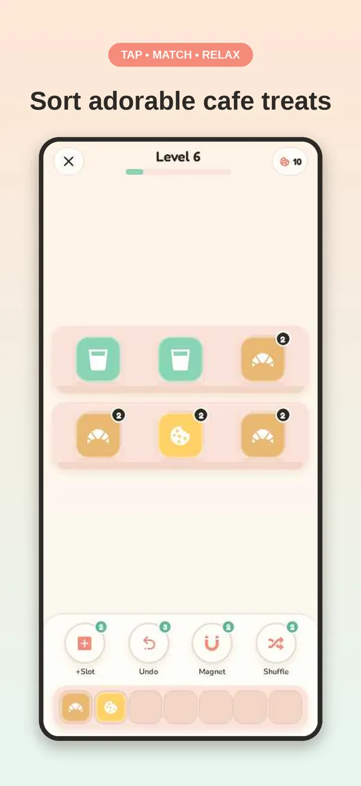
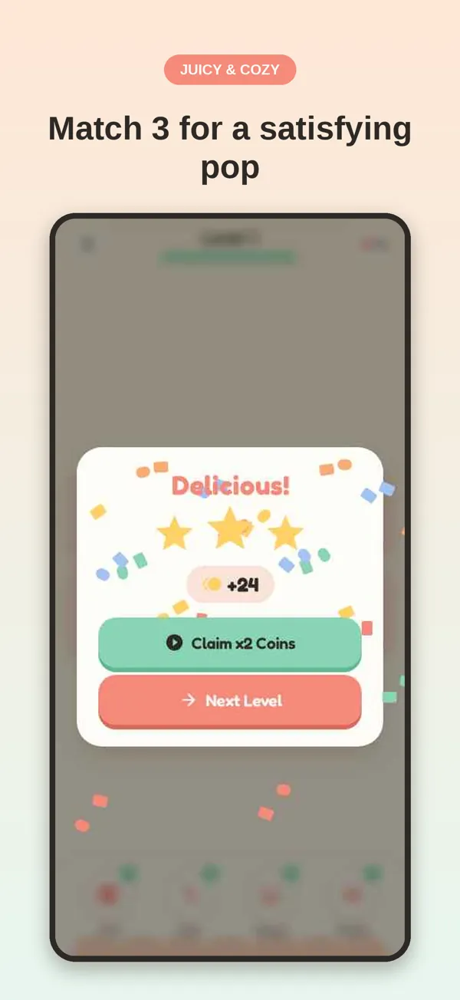
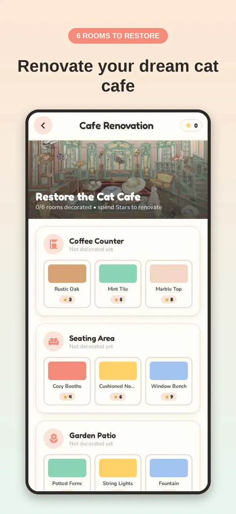
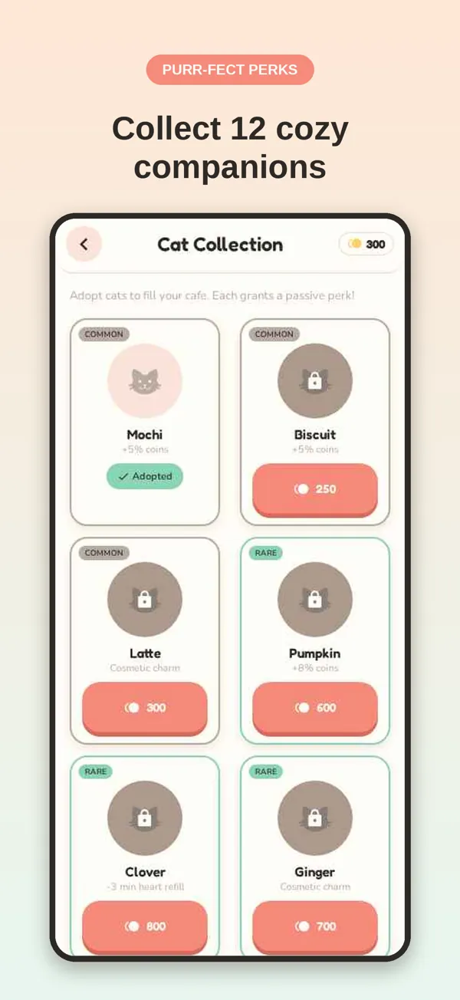

Tap treats off the shelves, pop three of a kind, and turn a run-down cafe into the coziest spot in town. Adopt 12 cats along the way. Relaxing, satisfying, and playable anywhere — no Wi-Fi needed.
Download on the App Store
Starts simple and adds iced treats, mystery boxes, locked crates and conveyor shelves as you go.
Counter, seating, patio, bakery, lounge and rooftop — pick the décor you like with the stars you earn.
Each cat brings a perk, from bonus coins to faster hearts. Collect every rarity.
Daily challenges with streak rewards, weekly tournaments and a 30-tier season pass.
+1 slot, undo, magnet and shuffle help with the tricky boards.
Soft music, satisfying pops, no timers. Works fully offline, on a flight or a commute.


